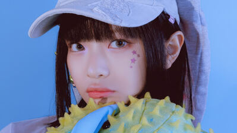

★ Minji(hangul: 민지) nascida Kim Minji (김민지) em 7 de maio de 2004 (19 anos) - líder. Ela nasceu em Chuncheon, Gangwon, Coreia do Sul.
Minji costumava ser trainee da Source Media desde quando estava no ensino fundamental II e foi o rosto das audições de 2019, mas migrou para a ADOR para sua estreia.
★ Hanni(hangul: 하니) nascida Hanni Pham em 6 de outubro de 2004 (19 anos) - vocalista, dançarina. Ela nasceu em Melbourne, Victoria, Austrália.
Hanni é descendente de vietnamitas do k-pop. Ela passou nas audições globais da Big Hit em 2019 e treinou por dois anos e meio.
★ Danielle(hangul: 다니엘) nascida Danielle Marsh em 11 de abril de 2005 (18 anos) - vocalista, dançarina. Ela nasceu em Munsan, Paju, Gyeonggi-do, Coreia do Sul.
Danielle apareceu em vários programas de televisão infantis antes de sua estreia. Seu treinamento oficial para se tornar idol começou em 2020.
★ Haerin(hangul: 해린) nascida Kang Haerin (강해린) em 15 de maio de 2006 (17 anos) - vocalista. Ela nasceu em Pyeongchon, Dongan-gu, Anyang, Gyeonggi-do, Coreia do Sul.
Haerin fala fluentemente coreano e inglês. Ela costumava tocar pansori, um gênero musical que faz parte do folclore da Coreia.
★ Hyein(hangul: 혜인) nascida Lee Hyein (이혜인) em 21 de abril de 2008 (15 anos) - vocalista. Ela nasceu em Incheon, Coreia do Sul.
Hyein começou a trabalhar como modelo aos 8 anos de idade.